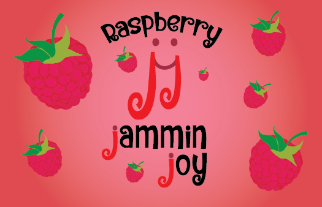

Jammin Joy

Jammin Joy was the first packaging design I created. The goal of this assignment was to pick a product then make a logo and label design for it. My logo is of three things to display my chosen name: two j's, a smiley face connecting them showing joy, and a music note to represent jammin. I chose to make my own jam showcasing the flavors strawberry, huckleberry, and raspberry. After creating the labels, I went a step farther and created magazine ads for jam.
